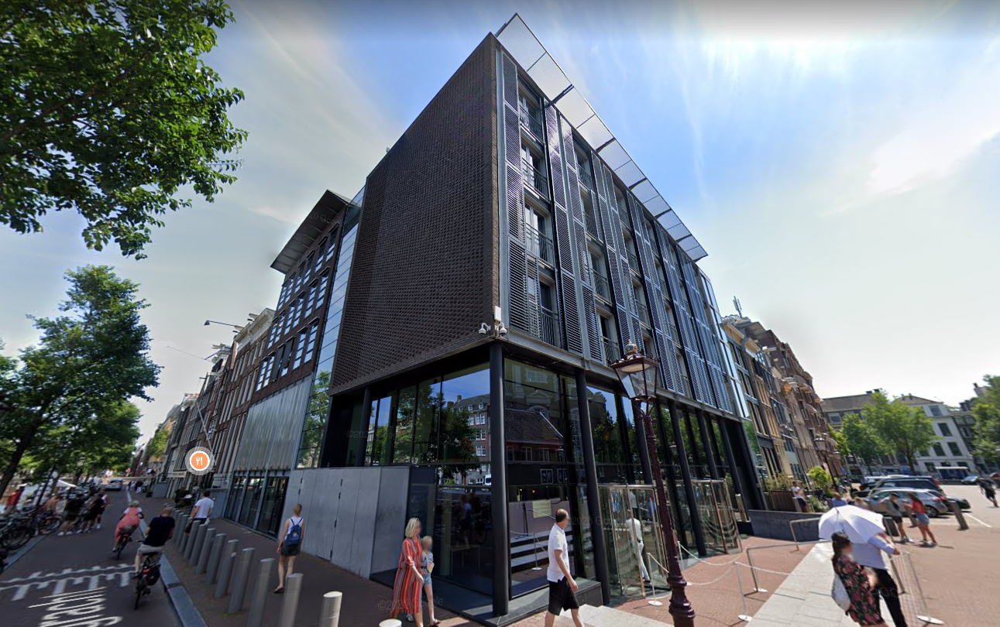

- 
Anne Frank Huis
The Anne Frank Museum is located around the families hiding place, ‘Het Achterhuis’, where Anne’s dad had his own company. They stayed here during the Second World war, where Anne Frank wrote her famous diary. They were able to hide there for about 2 years. To get into their hiding place you had to rotate a bookcase. They were, sadly, discovered and taken to different concentration camps. Anne herself was taken to Bergen-Belsen, in Germany. The only one from the Frank family that survived was the father, Otto Frank.